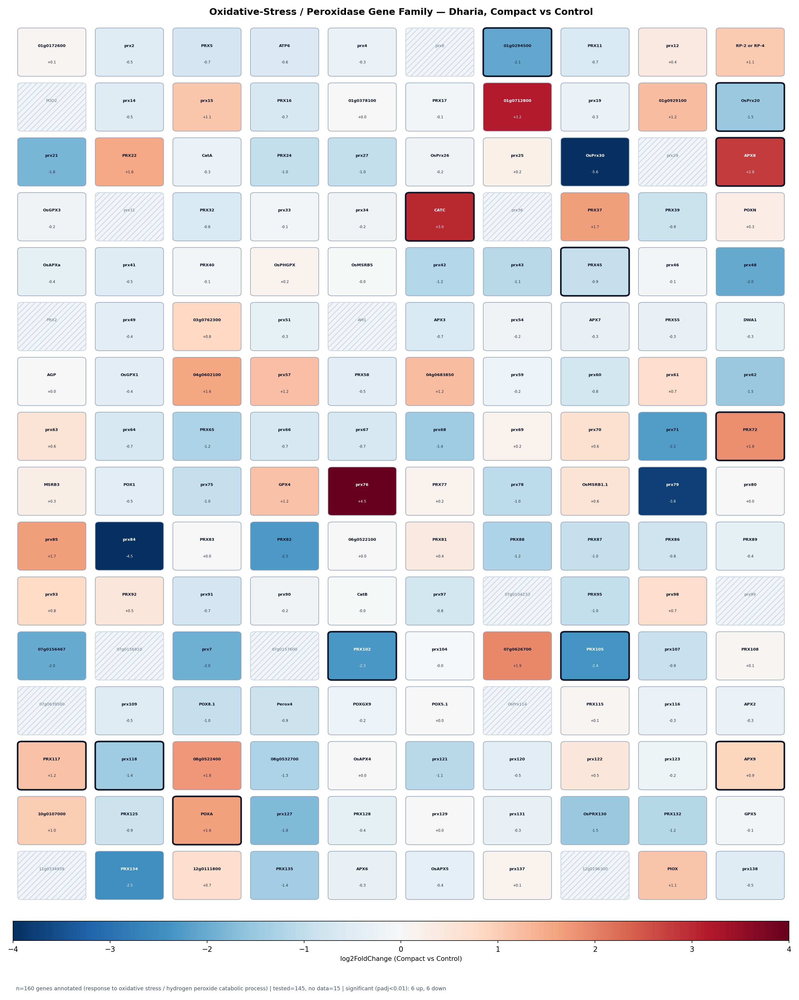
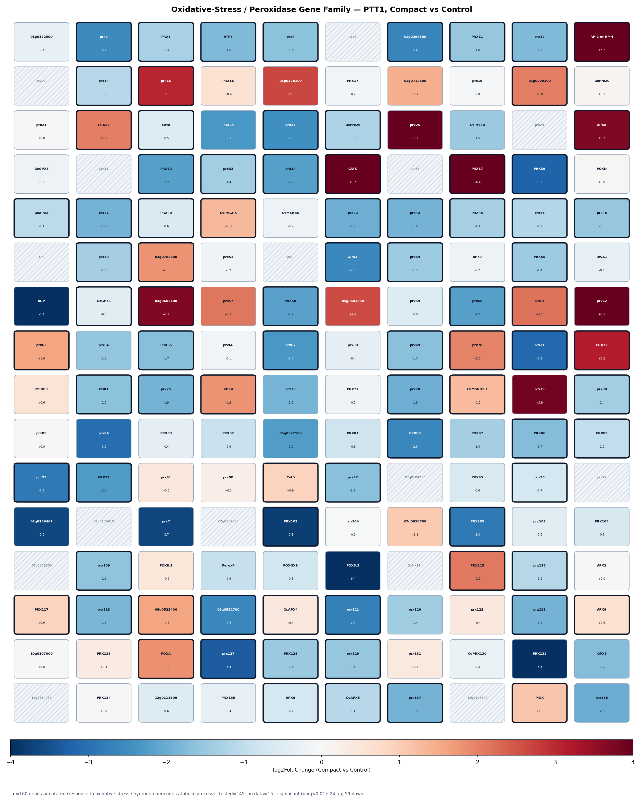
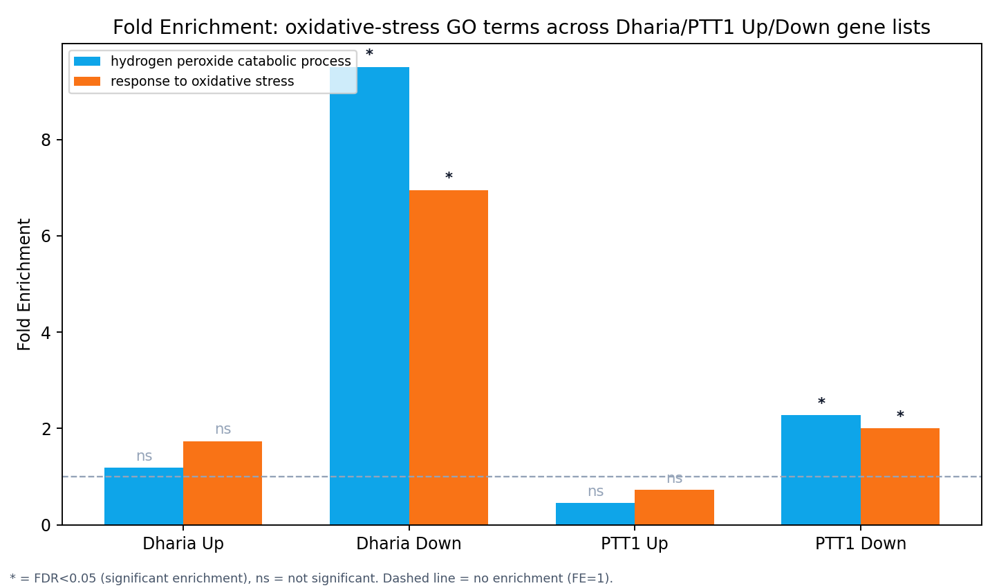

Oxidative-Stress / Peroxidase Gene Family — Dharia vs PTT1, Compact vs Control
Gene-level follow-up to the GO Enrichment page's response to oxidative stress (GO:0006979) and hydrogen peroxide catabolic process (GO:0042744) terms — both dominated by the same large class III peroxidase gene family.
แก้ไขข้อมูลจากหน้า GO Enrichment (09-14): หน้านั้นเคยเขียนว่า 4 เทอมนี้
“significant สวนทางกันระหว่างพันธุ์” (Dharia significant ฝั่ง Down แต่ PTT1 significant ฝั่ง
Up) — ข้อความนี้ ไม่ถูกต้อง หลังเช็คกับไฟล์ GO enrichment ต้นฉบับ
(GOenrich_PTT1_Up_allterms.csv) โดยตรงพบว่า PTT1 ไม่ significant ฝั่ง Up สำหรับทั้ง 2
เทอมนี้เลย (response to oxidative stress: FE = 0.72, FDR = 0.975; hydrogen peroxide
catabolic process: FE = 0.45, FDR = 0.9997 — ทั้งคู่ค่า FE < 1 คือ
depleted ไม่ใช่ enriched) แต่ PTT1 significant จริงฝั่ง Down แทน (FDR = 4.0×10⁻⁷ และ
7.5×10⁻⁸ ตามลำดับ) — ทิศทางเดียวกับ Dharia Down จึงเป็น concordant (ทิศทางเดียวกัน)
ไม่ใช่ opposite ตรวจสอบเพิ่มเติมถึงระดับยีนเดี่ยวแล้วเช่นกัน (ดูหัวข้อถัดไป) ก็ไม่พบ pattern สวนทางกันเลย
หน้า GO Enrichment และ _AI_CONTEXT.md จะได้รับการแก้ไขให้ตรงกับข้อมูลนี้ด้วย
Gene-level view: 160 oxidative-stress / peroxidase genes
The two GO terms overlap heavily — 111 of 160 annotated genes carry both terms (mostly class III peroxidases, which both scavenge H₂O₂ and are the classic textbook example of a plant oxidative-stress response gene family). Pathway schematics below show all 160 genes, colored by log2FoldChange (Compact vs Control); a thick black border marks padj < 0.01. Labels use the RAP-DB gene symbol where one exists, otherwise a shortened locus ID.
กลไกโดยสรุป (ภาษาไทย): เมื่อรากพืชเจอความเครียดจากดินอัดแน่น เซลล์จะสร้าง reactive oxygen species (ROS) เช่น hydrogen peroxide (H₂O₂) เพิ่มขึ้นเป็นผลพลอยได้จากความเครียด Class III peroxidase เป็นเอนไซม์ตระกูลใหญ่ในข้าว (มากกว่า 130 ยีนในชุดนี้) ที่ทำหน้าที่กำจัด H₂O₂ส่วนเกิน (antioxidant defense) แต่บางตัวก็มีบทบาทอื่นร่วมด้วย เช่น การเชื่อมโครงสร้าง cell wall (lignification) จากข้อมูลทั้งสองพันธุ์ลดการแสดงออกของยีนกลุ่มนี้เป็นส่วนใหญ่ (down-dominant) ซึ่งตรงข้ามกับสมมติฐานเบื้องต้นที่คาดว่าพืชจะ เพิ่ม การแสดงออกของเอนไซม์ต้านอนุมูลอิสระเมื่อเจอ ความเครียด — ผลที่เห็นจริงอาจสะท้อนว่าการตอบสนองต่อ mechanical/compaction stress ในช่วงเวลาที่เก็บ ตัวอย่างนี้ไม่ได้อยู่ในโหมด acute oxidative burst แล้ว หรืออาจเป็นการปรับสมดุลลดการทำงานของเอนไซม์บาง isoform ลงหลังผ่านช่วงตอบสนองเฉียบพลันไปแล้ว — ข้อมูลนี้ไม่สามารถระบุกลไกที่แน่ชัดได้ ต้องการข้อมูล time-course เพิ่มเติมจึงจะสรุปได้

เปรียบเทียบ Dharia กับ PTT1
PTT1 has roughly 7× as many significant genes as Dharia (83 vs 12), and unlike the glutathione or ethylene comparisons, the direction here is concordant between varieties, not just similar in proportion: both varieties are dominated by down-regulation (Dharia 6 up/6 down — balanced; PTT1 24 up/59 down — clearly down-skewed), and zero genes flip sign between varieties while staying significant in both. The larger PTT1 response is consistent with its much larger overall significant-gene list (6,830 up + 6,072 down vs Dharia's 713 + 178) diluting fold-enrichment at the pathway level while still surfacing more raw gene-level hits.


Reproducing this: gene list built fresh for this page by scanning
IRGSP-1.0_representative_annotation_2026-02-05.tsv for loci annotated to GO:0006979 or
GO:0042744 (160 loci), then joined against the full (not just significant-only)
Dharia_Comp_vs_Ctrl_Result.csv / PTT1_Comp_vs_Ctrl_Result.csv DESeq2 v3
tables. Significant-gene counts were cross-checked against k in the primary
GOenrich_*_allterms.csv files and matched exactly (Dharia 6/6, PTT1 24/59). Genes with no
log2FC value in a variety's column were dropped by DESeq2 for that contrast (independent filtering)
and are shown hatched/gray. Color scale capped at ±4 log2FC. Method note: as on the GO
Enrichment page, this uses each gene's directly-annotated GO term only, no DAG propagation.
← Back to GO Enrichment overview for the full Dharia/PTT1 Up/Down comparison this term came from.